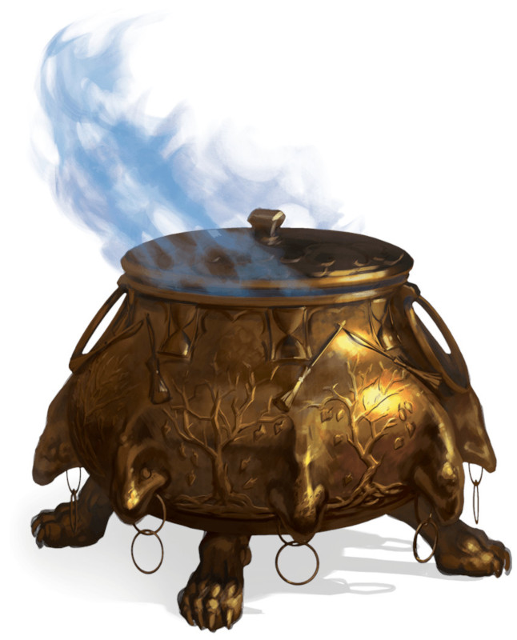

Chaudron d'Iggwilv
Objet merveilleux, artéfact (nécessite un lien avec un lanceur de sort)
Ce chaudron magique a été construit par Iggwilv, aidée par sa mère adoptive, l'archifée Baba Yaga. Le chaudron a deux formes. Seules Iggwilv ou Baba Yaga peuvent changer la forme du chaudron (au prix d'une action) sans avoir besoin d'y être liées. Dans sa première forme, le chaudron est fait d'or pur et décoré de reliefs de branches nues et de feuilles mortes. Dans la seconde, il est composé de fer et représente un florilège d'animaux : chauve-souris, crapauds, chats, lézards et serpents, chacun d'entre eux représenté huit fois. Quelle que soit sa forme, le chaudron a un diamètre maximal d'un peu moins d'un mètre avec une ouverture d'une soixantaine de centimètres au sommet, une poignée en fer forgé et huit pieds assurant sa stabilité. Pensant 40 kilos, il peut contenir jusqu'à 400 litres de liquide.
Lien. Une créature humanoïde se liant au chaudron doit réussir un jet de sauvegarde de Constitution DD 15 ou subir les affres du temps immédiatement jusqu'à devenir un vieillard. Dans cet état de décrépitude, elle voit sa vitesse réduite de moitié, sa portée auditive et visuelle réduite à 9 mètres, et souffre d'un désavantage à tous ses jets de caractéristiques, d'attaques et de sauvegarde. En sus, cette créature mourra de vieillesse dans 3d8 jours. Il n'est possible d'annuler ces effets que par un sort de souhait ou une intervention divine. Trois guenaudes peuvent se lier au chaudron simultanément, si elles ont formé une assemblée. Si l'assemblée est dissoute, le lien prend fin pour les trois guenaudes.
Propriétés aléatoires. Sous ses deux formes, le chaudron possède un certain nombre de propriétés déterminées aléatoirement :
• 1 propriété bénéfique mineure
• 1 propriété néfaste mineure
Chaudron d'or. Le chaudron d'or a les propriétés suivantes :
• Si de l'eau est versée à l'intérieur et touillée pendant 1 minute, elle se transforme en un délicieux ragoût pouvant nourrir une personne par litre d'eau. Le ragoût reste chaud tant qu'il est dans le chaudron puis refroidit naturellement une fois servi. Le chaudron quand à lui reste tiède au toucher pendant toute l'opération.
• Si du vin est versé à l'intérieur et touillé pendant 10 minutes, il se transforme en un élixir magique qui renforce une personne par litre de vin. Toute créature buvant cet élixir gagne 10 points de vie temporaires. Après préparation, l'élixir reste actif pendant 1 heure puis perd ses propriétés. Une fois cette propriété utilisée, le chaudron ne peut plus être employé de cette manière avant la prochaine aube.
• Rempli de 360 litres d'eau et de 40 litres de vin, le chaudron d'Iggwilv peut être utilisé comme focaliseur pour un sort de scrutation. La cible de ce sort rate alors automatiquement son jet de sauvegarde, et le sort fonctionne même si celle-ci se trouve sur un autre plan d'existence. À l'expiration du sort, tout le liquide contenu dans le chaudron disparaît.
• Tremper les brins d'un balai ordinaire dans le chaudron préalablement rempli d'eau transformera le balai en un balai volant pour 3 jours. Une fois cette propriété utilisée, le chaudron ne peut plus être employé de cette manière avant la prochaine aube.
Chaudron de fer. Le chaudron de fer a les propriétés suivantes :
• Par une action, vous pouvez crier dans le chaudron vide, ce qui y invoque une nuée de chauve-souris qui en sort immédiatement et joue juste après vous dans l'ordre d'initiative. La nuée obéit à vos ordres et disparait au bout de 1 minute ou quand ses points de vie tombent à 0. Une fois cette propriété utilisée, le chaudron ne peut plus être employé de cette manière avant la prochaine aube.
• Si au moins 4 litres de sang sont versés dans le chaudron et touillés pendant 1 minute, ils se transforment en un nuage de fumée noire et se dissipent rapidement. Tous les humanoïdes présents, à l'exception de la créature liée au chaudron et de celles immunisées aux effets de charme, tombent inconscients pour une durée de 1 heure. Cet effet a une portée de 30 mètres pour chaque dose de quatre litres de sang. Une créature inconsciente reprend ses esprits si elle subit des dégâts ou si une autre créature utilise une action pour la secouer. Une fois cette propriété utilisée, le chaudron ne peut plus être employé de cette manière avant la prochaine aube.
• Attacher une grenouille ou un crapaud mort à une branche ordinaire et la tremper dans le chaudron préalablement rempli d'eau transformera la branche en baguette de métamorphose avec 3 charges. Cette baguette ne peut pas récupérer de charges et tombe en cendre quand la dernière est utilisée. Une fois cette propriété utilisée, le chaudron ne peut plus être employé de cette manière pendant 8 jours.
• Si vous passez 1 minute à toucher le chaudron avec une corne de licorne tout en récitant le poème "Le Chaudron de la reine des sorcières", toutes les créatures dans un rayon de 300 mètres à l'exception de celles liées au chaudron son figées dans le temps. Une créature figée dans le temps est incapable d'agir, ne peut se mouvoir ou parler, ne vieillit plus et n'a plus conscience de l'écoulement du temps. En sus, elle ne peut être déplacée, blessée de quelque manière que ce soit ou affectée par une autre magie que celle-ci. Tout effet ou sort présent sur cette créature pend fin jusqu'à ce qu'elle ne soit plus figée dans le temps. Détruire le chaudron, l'envoyer dans un autre plan d'existence ou le toucher avec une corne de licorne pendant 1 minute en récitant le poème "Le Chaudron de la reine des sorcières" met fin à l'effet sur toutes les créatures. Celui-ci est également dissipé si une créature affectée se trouve dans un champ d'antimagie ou entre en contact avec une corne de licorne.
Détruire le chaudron. Le chaudron est un objet de taille M avec une CA de 19, 80 points de vie et une immunité à toute source de dégâts autre qu'une arme épée ardente ou fer gelé. Réduire les points de vie du chaudron à 0 pv à l'aide d'une de ces armes le brise en huit morceaux de taille équivalente, et dissipe tous ses effets encore actifs. Quand le chaudron d'Iggwilv est détruit, toutes les guenaudes du multivers perdent la capacité Incantation commune de leur assemblée.
Reconstruire le chaudron. Rassembler les huit morceaux du chaudron à 1,50 mètre les uns des autres et lancer un sort de souhait permet de le restaurer, lui rendant toutes ses propriétés. Simultanément, toutes les guenaudes du multivers récupèrent la capacité Incantation commune de leur assemblée.
Lien. Une créature humanoïde se liant au chaudron doit réussir un jet de sauvegarde de Constitution DD 15 ou subir les affres du temps immédiatement jusqu'à devenir un vieillard. Dans cet état de décrépitude, elle voit sa vitesse réduite de moitié, sa portée auditive et visuelle réduite à 9 mètres, et souffre d'un désavantage à tous ses jets de caractéristiques, d'attaques et de sauvegarde. En sus, cette créature mourra de vieillesse dans 3d8 jours. Il n'est possible d'annuler ces effets que par un sort de souhait ou une intervention divine. Trois guenaudes peuvent se lier au chaudron simultanément, si elles ont formé une assemblée. Si l'assemblée est dissoute, le lien prend fin pour les trois guenaudes.
Propriétés aléatoires. Sous ses deux formes, le chaudron possède un certain nombre de propriétés déterminées aléatoirement :
• 1 propriété bénéfique mineure
• 1 propriété néfaste mineure
Chaudron d'or. Le chaudron d'or a les propriétés suivantes :
• Si de l'eau est versée à l'intérieur et touillée pendant 1 minute, elle se transforme en un délicieux ragoût pouvant nourrir une personne par litre d'eau. Le ragoût reste chaud tant qu'il est dans le chaudron puis refroidit naturellement une fois servi. Le chaudron quand à lui reste tiède au toucher pendant toute l'opération.
• Si du vin est versé à l'intérieur et touillé pendant 10 minutes, il se transforme en un élixir magique qui renforce une personne par litre de vin. Toute créature buvant cet élixir gagne 10 points de vie temporaires. Après préparation, l'élixir reste actif pendant 1 heure puis perd ses propriétés. Une fois cette propriété utilisée, le chaudron ne peut plus être employé de cette manière avant la prochaine aube.
• Rempli de 360 litres d'eau et de 40 litres de vin, le chaudron d'Iggwilv peut être utilisé comme focaliseur pour un sort de scrutation. La cible de ce sort rate alors automatiquement son jet de sauvegarde, et le sort fonctionne même si celle-ci se trouve sur un autre plan d'existence. À l'expiration du sort, tout le liquide contenu dans le chaudron disparaît.
• Tremper les brins d'un balai ordinaire dans le chaudron préalablement rempli d'eau transformera le balai en un balai volant pour 3 jours. Une fois cette propriété utilisée, le chaudron ne peut plus être employé de cette manière avant la prochaine aube.
Chaudron de fer. Le chaudron de fer a les propriétés suivantes :
• Par une action, vous pouvez crier dans le chaudron vide, ce qui y invoque une nuée de chauve-souris qui en sort immédiatement et joue juste après vous dans l'ordre d'initiative. La nuée obéit à vos ordres et disparait au bout de 1 minute ou quand ses points de vie tombent à 0. Une fois cette propriété utilisée, le chaudron ne peut plus être employé de cette manière avant la prochaine aube.
• Si au moins 4 litres de sang sont versés dans le chaudron et touillés pendant 1 minute, ils se transforment en un nuage de fumée noire et se dissipent rapidement. Tous les humanoïdes présents, à l'exception de la créature liée au chaudron et de celles immunisées aux effets de charme, tombent inconscients pour une durée de 1 heure. Cet effet a une portée de 30 mètres pour chaque dose de quatre litres de sang. Une créature inconsciente reprend ses esprits si elle subit des dégâts ou si une autre créature utilise une action pour la secouer. Une fois cette propriété utilisée, le chaudron ne peut plus être employé de cette manière avant la prochaine aube.
• Attacher une grenouille ou un crapaud mort à une branche ordinaire et la tremper dans le chaudron préalablement rempli d'eau transformera la branche en baguette de métamorphose avec 3 charges. Cette baguette ne peut pas récupérer de charges et tombe en cendre quand la dernière est utilisée. Une fois cette propriété utilisée, le chaudron ne peut plus être employé de cette manière pendant 8 jours.
• Si vous passez 1 minute à toucher le chaudron avec une corne de licorne tout en récitant le poème "Le Chaudron de la reine des sorcières", toutes les créatures dans un rayon de 300 mètres à l'exception de celles liées au chaudron son figées dans le temps. Une créature figée dans le temps est incapable d'agir, ne peut se mouvoir ou parler, ne vieillit plus et n'a plus conscience de l'écoulement du temps. En sus, elle ne peut être déplacée, blessée de quelque manière que ce soit ou affectée par une autre magie que celle-ci. Tout effet ou sort présent sur cette créature pend fin jusqu'à ce qu'elle ne soit plus figée dans le temps. Détruire le chaudron, l'envoyer dans un autre plan d'existence ou le toucher avec une corne de licorne pendant 1 minute en récitant le poème "Le Chaudron de la reine des sorcières" met fin à l'effet sur toutes les créatures. Celui-ci est également dissipé si une créature affectée se trouve dans un champ d'antimagie ou entre en contact avec une corne de licorne.
Détruire le chaudron. Le chaudron est un objet de taille M avec une CA de 19, 80 points de vie et une immunité à toute source de dégâts autre qu'une arme épée ardente ou fer gelé. Réduire les points de vie du chaudron à 0 pv à l'aide d'une de ces armes le brise en huit morceaux de taille équivalente, et dissipe tous ses effets encore actifs. Quand le chaudron d'Iggwilv est détruit, toutes les guenaudes du multivers perdent la capacité Incantation commune de leur assemblée.
Reconstruire le chaudron. Rassembler les huit morceaux du chaudron à 1,50 mètre les uns des autres et lancer un sort de souhait permet de le restaurer, lui rendant toutes ses propriétés. Simultanément, toutes les guenaudes du multivers récupèrent la capacité Incantation commune de leur assemblée.
Adventures (The Wild Beyond The Witchlight)
